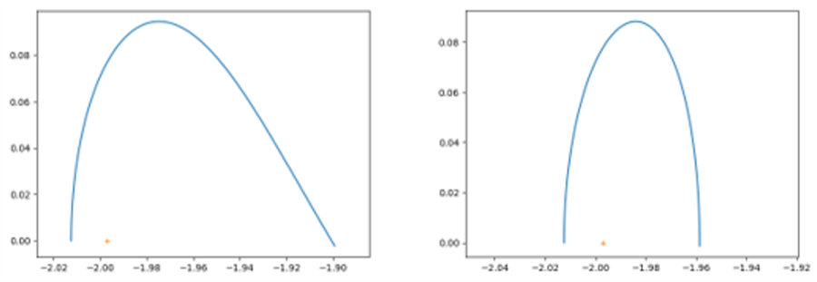
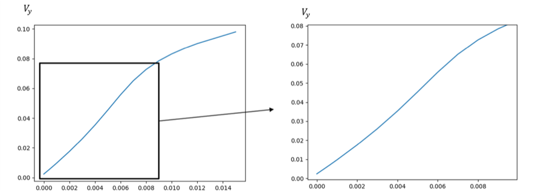
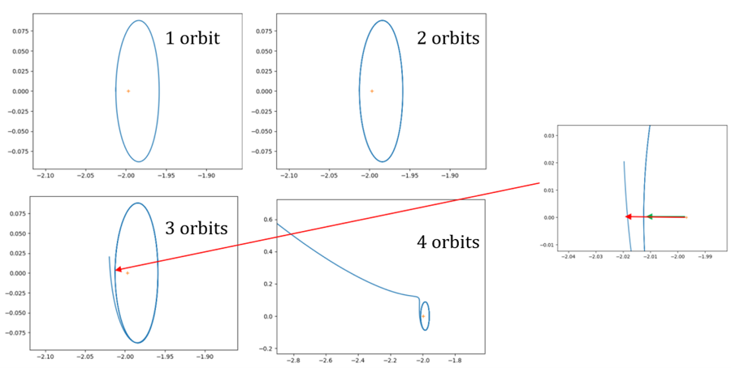
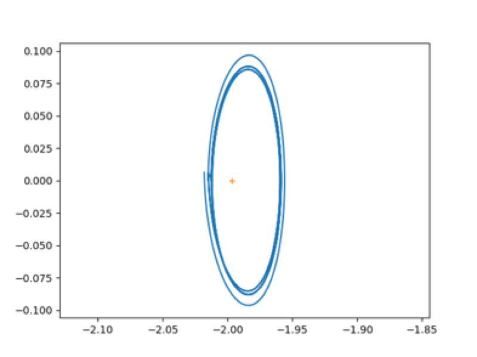
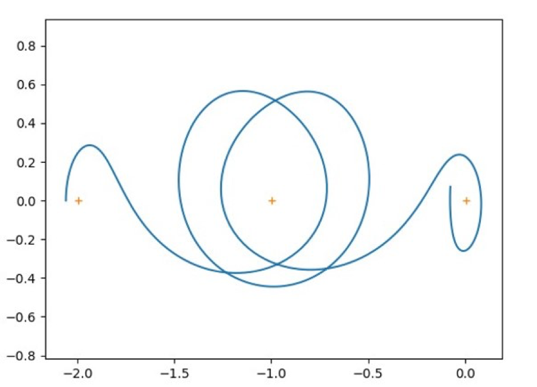

Independent study · Classe préparatoire, Lycée François Ier, France
Stability at the Lagrange points and Halo orbits
This is an exposition, not original research — the theory is classical and the numerics reproduce known results. I have kept it here because it is where my interest in dynamical systems started, and because the shooting method and stability analysis in it are the same tools I use now on hybrid systems, though back then I didn't knew it yet. I kept all original figures as I think it's intersting to see how I was thinking almost 8 years ago, fresh out of highschool.
The problem
The three-body problem admits no analytical solution. Euler, Lagrange, Laplace, Jacobi and Le Verrier all failed at it; only exotic configurations integrate, like the Copenhagen problem (two equal masses) or the Pythagorean problem (mass ratio 3:4:5). One case does allow analytic simplification: when the third body's mass is negligible against the other two. That is the circular restricted three-body problem (CR3BP).
The two massive primaries orbit their common centre of mass on circles, and the problem is written in synodic coordinates — a frame rotating with them, the \(x\)-axis joining primary 1 to primary 2. With canonical units (the primary separation as the distance unit, \(G = 1\), a full primary orbit taking \(2\pi\) time units), the entire system is characterised by a single mass ratio:
\[ \mu = \frac{m_2}{m_1 + m_2} \]For the Earth–Moon system \(\mu \approx 0.0122\). Five equilibria — the Lagrange points — appear in this rotating frame, and \(L_1\), \(L_2\) and \(L_3\) are unstable. Periodic orbits exist around them, which is why real missions park there.
Stability and manifolds
Writing \(\phi(t, t_0)\) for the flow map that carries a state from time \(t_0\) to time \(t\), a trajectory starting slightly off a nominal one, at \(\bar{x}_0 + \delta\bar{x}_0\), separates as
\[ \delta\bar{x}(t) = \phi(t, x_0 + \delta x_0) - \phi(t, x_0) \]Linearising gives the state transition matrix, and evaluating it over exactly one period gives the monodromy matrix, whose eigenvalues classify the orbit's stability. The eigenvectors give the stable and unstable manifolds \((W_s, W_u)\): the sets of points whose forward (or backward) half-orbits converge onto the periodic orbit. These manifolds are what make low-energy transfers possible — you ride them instead of burning fuel.
Computing the orbits: a shooting method
Finding a periodic orbit is a boundary value problem, solved here with a Poincaré section and a shooting method. Exploit the symmetry of the CR3BP: start on the \(x\)-axis with velocity perpendicular to it, integrate forward, and if the trajectory crosses the axis perpendicularly again at \(T_{1/2}\), the full orbit closes by symmetry. So the search reduces to one scalar condition on a half-orbit.


Results
Sweeping initial conditions traces out a whole family of periodic orbits growing away from the Lagrange point.


The manifolds then give a transfer. Following the unstable manifold of an \(L_1\) orbit onto the stable manifold of an \(L_2\) orbit connects the two without a large burn:

Looking back
The instinct in this write-up — linearise about an equilibrium, read stability off the eigenvalues, then use the structure to steer rather than fight it — is the same instinct behind the collision recovery work and the hybrid MPC. Different manifolds, same habits.